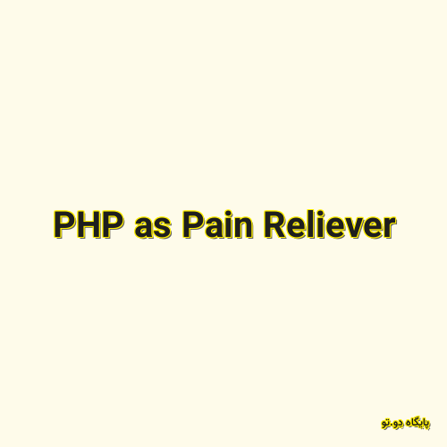

✖

PHP as Pain Reliever
در گزارش فوق، روشی سریع برای ایجاد واسط گرافیکی بر روی جداول مایسیکوال معرفی میشود. برای مثال اگر زمانی قصد داشته باشید تا به سرعت یک فرم آنلاین طراحی کرده و کاربران را به آن معرفی کنید، و یا به سرعت وب سایتی را برای نمایش محتوی درون پایگاه داده ایجاد کنید، روش فوق (و سورس کد مربوطه) کارآمد خواهد بود.
پایگاه دِو.تو 2019-12-31 10:53:00 مطالعه پست گزارش خرابی لینک / محتوای مجرمانه / تغییر محتویات لینک